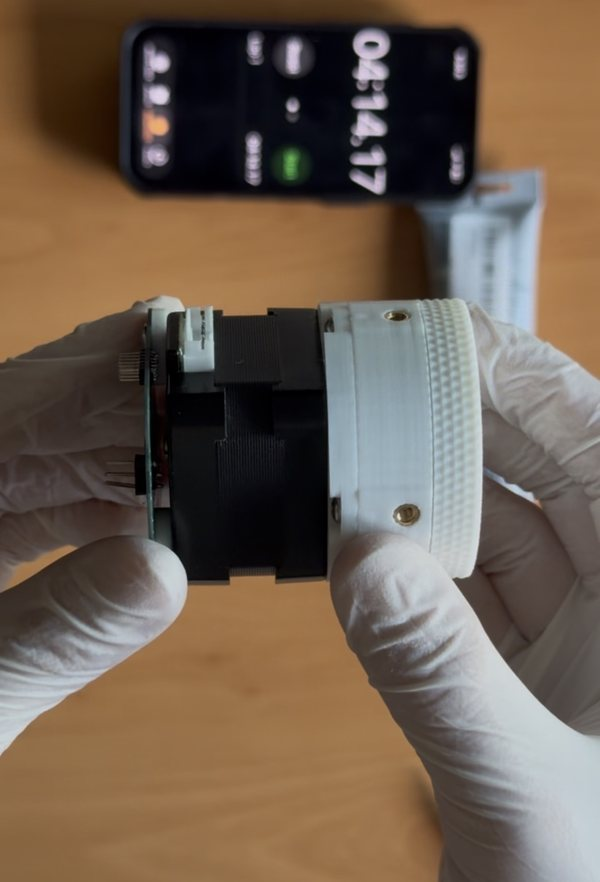

<actuators/>
Compact harmonic drive actuators you can print at home. Every one ships with its CAD files, a complete bill of materials, and the actual load-cell data behind the torque numbers, because a spec you can't check isn't a spec. All free under CC BY-SA 4.0.

HDP30
30:1 pancake harmonic drive · NEMA 17
Half again the reduction of the HD20, in a thinner stack, off the same motor face and the same $4 of hardware. Torque testing is still pending, and we say so on the page.
- 30:1 reduction
- not yet tested
- ~$3.96 hardware
<archive/>
Superseded revisions don't get deleted. Their CAD stays downloadable, their bills of materials still load and their test data stays up, because a dead link is a worse outcome than an out-of-date page.
The HD20 lives there now, and it's worth knowing that it's still the only drive we've put on a load cell. If you need a torque figure you can defend, build that one.
<design-your-own/>
Every one of these starts in our free harmonic maker, a parametric tooth profile generator that exports DXF. If you'd rather understand the mechanism before you build one, start with harmonic drives, plainly.